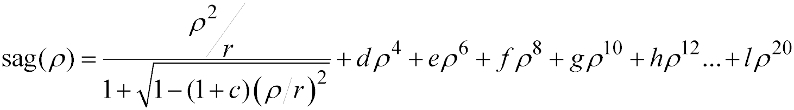

Creates aspheric surfaces normal to the axis of symmetry.
Syntax
OPTICAL X x r[`p ][ c d e f g h i j k l ] [EXPAND] [aperture ... ]
Y y
Z z
[ t r[`p ] [ c d e f g h i j k l ] [EXPAND]]
| Option | Description |
|---|
| X, Y or Z | axis of symmetry |
| x, y or z | location along coordinate axis |
| r | vertex radius of curvature |
| p | vertex radius of curvature of a parabolic term; optionally subtracted from
base surface |
| c | conic constant |
| d, e, ..., l | 4th, 6th, ..., 20th-order aspheric deformation coefficients |
| EXPAND | flag to expand conic into aspheric terms |
| aperture | ELLIPSE, RECTANGLE, or HEXAGONAL |
| t | relative distance of second optical surface |
Reference Point
At intersection of surface and coordinate axis.
Surface Normal
Along positive coordinate direction.
Remarks
- Creates a classical optical surface normal
to the axis of symmetry at a value given by the third entry. This is the command of
choice for making simple conic or aspheric surfaces in ASAP.
- The second entry designates the axis of
symmetry (either X, Y, or Z) for the surface.
- The vertex radius of curvature r is negative if the center of curvature is on the negative side of the
surface. A zero or very large r corresponds to a planar flat.
-
OPTICAL surfaces have trouble faceting when the slope at the
boundary becomes infinite, such as the edge of a hemisphere. Using an ELLIPSE aperture that is slightly smaller than the boundary radius
minimizes these problems.
Example: A hemispherical dome with radius 100 is
defined by:
SURFACE; OPTICAL axis Z z 0 radius 100 conic 0 ELLIPSE 99.999
- c is the conic constant
(for example, 0 is a sphere, -1 is a parabola, and so on.).
- d is the 4th-order
aspheric deformation coefficient, e is the 6th-order, and so on up to l the 20th.
- This surface/function is stored in order
doubled mode.
- ASAP models the surface function exactly up
to the 10th-order, or if the base surface is parabolic (conic constant = -1) up to
the 20th-order. If the base surface is not parabolic and exceeds the 10th-order, the
surface is approximated by a truncated power series. If a is specified, a table of
sag points for user verification is printed to verify accuracy.
- If the highest order aspheric entry is the
literal EXPAND, the conic is expanded for all coefficients into
aspheric components up to that order. When the EXPAND option is
used, the table of sag points is not produced.
- The sag of the surface as a function of
the radial coordinate ρ is given by the following equation:

- At the vertex of the surface the normal
vector points along the positive coordinate direction.
- A second line immediately following the
OPTICAL command can be used to specify an optional second
surface a distance t from the first surface. This inclusion
permits modeling of the front and back surfaces of a singlet lens with a single
entity.
- This surface can extend to infinity unless
a LOCAL command follows, or a trailing aperture option of the
following form is specified:
ELLIPSE a [ a' [ o [ s [ s' ] ] ] ]
RECTANGLE
HEXAGONAL a [ o [ s [ s' ] ] ]
- a a' are the heights in
the other two transverse directions.
- For the HEXAGONAL form,
a is the center-to-vertex distance (maximum height).
- o is an optional central
hole ratio.
- s s' are the transverse
coordinates of the center of the aperture.
OPTICAL Examples